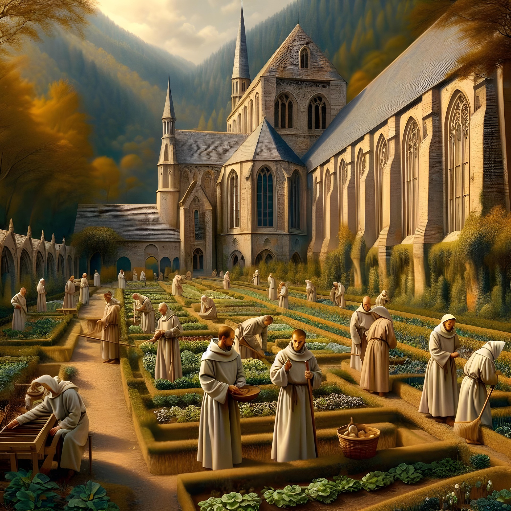
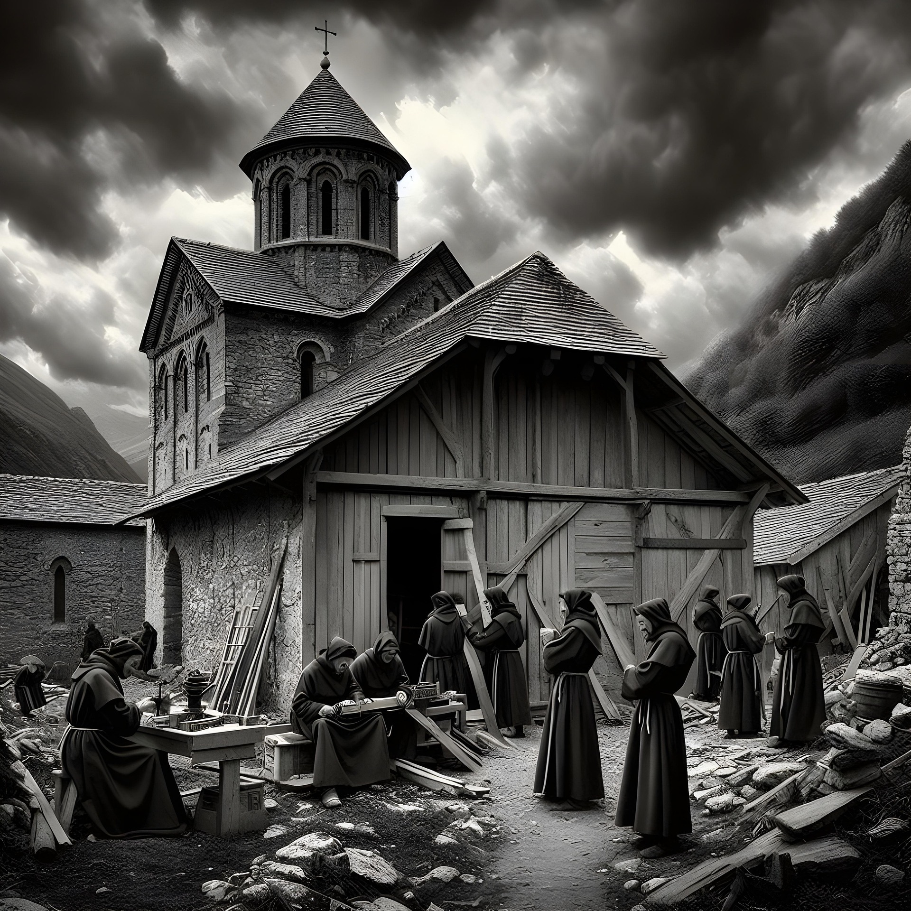
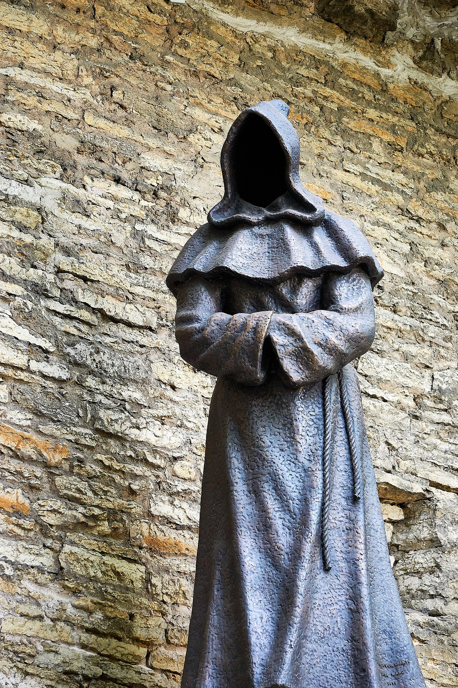
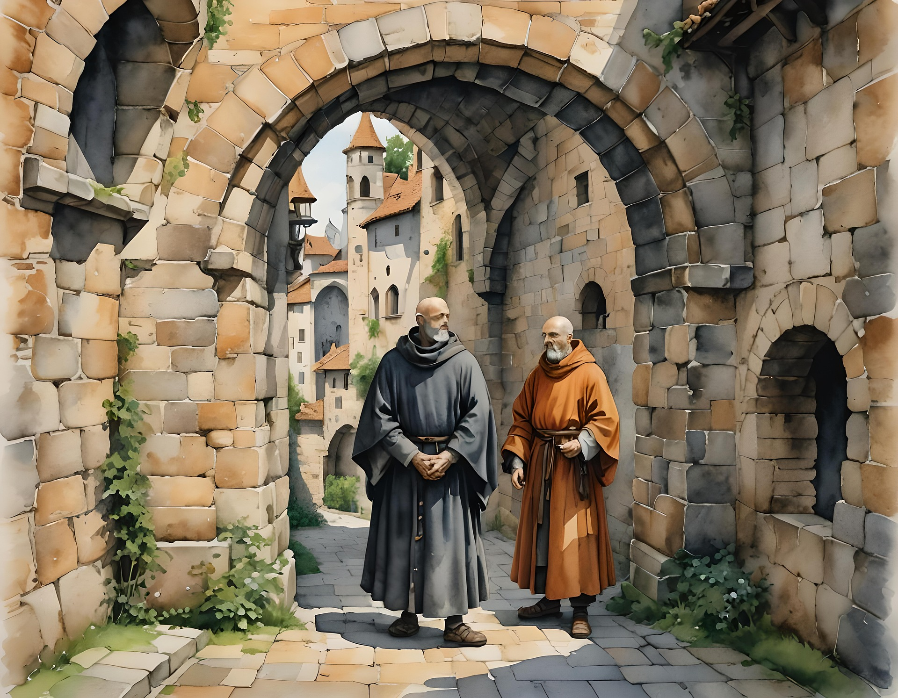
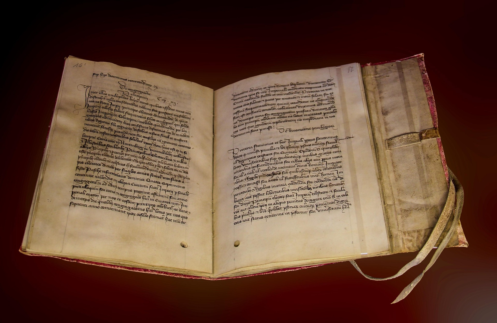

Életmód

-Meséljen kicsit magáról. Maga egy bencés szerzetes, igaz?
-Igen, egy bencés szerzetes vagyok. Hajnalban szoktunk kelni, imádkozással kezdjük a napot. 20 éve vagyok a szerzetesi rendben, tisztaságot, engedelmességet és szegénységet fogadva.
-És milyenek az ünnepnapok? Van különbség a hétköznap és az ünnepnap között?
-Vannak, igen. Az ünnepnapokon jóval hosszabb istentisztelet és imádság van a rend tagjaival, és a szertartások is jóval díszesebbek.
-Van bármilyen szabadidejük?
-Van. Olyankor olvashatok néhány levelet, kéziratot másolok, vagy esetleg kertet gondozok.
Feladataim

-Térjünk egy kicsit át a munka részére. Mit dolgoznak? Milyen feladata van egy bencés szerzetesnek?
-Jó kérdés. Az én feladatom a kódexek másolása a scriptoriumban, de más szerzetestársaim tanítanak vagy gyógynövényt termelnek.
-És ki a főnökük? Van egyáltalán vezető a szerzetesek közt?-Az apátnak tartozom engedelmességgel egyedül, ő és Isten az, akinek engedelmességet fogadtam. A rend szabályait szigorú figyelemmel kell követnem.
-Önnek tartozik valaki engedelmességgel?
-Igen, a tanulók, akik a kolostorba jönnek.
-És a környékbeliek mit szólnak a jelenlétükhöz?
-Vegyes véleményeket hallok innen-onnan. Nagyon sok környékbeli lakónak segítek lelkigondozással, és van, aki hálás a jelenlétünkért, de van, aki viszont nem szívesen lát minket a környéken sem.Ünnepek

-Milyen ünnepeket szoktak tartani? Egyáltalán szoktak maguk ünnepelni?
-Szoktunk. A legfontosabb ünnepeink nyilvánvalóan a vallásos ünnepek: a karácsony, a húsvét és a pünkösd.
-Mit szoktak ezeken a napokon csinálni?
-Ünnepélyes misén veszünk részt, és együtt éneklünk.
-Mitől olyan fontosak ezek?
-Megerősítik az Isten iránti szeretetünket és a hitünket.
Viselkedés és emberi kapcsolatok

-Milyen viselkedésformát kell követniük?
-Alázatosnak kell lennünk. A dicsekvést kerüljük, ha valamiben jobbak vagyunk, akkor azt nem adjuk mások tudtára szavakkal vagy tettekkel. A közösségünk érdekeit kell néznünk, az egyéni vágyakat pedig elengednünk.
-Az emberek között milyen kapcsolat van? Milyen a közösség?
-A vezetőnk a mélyen tisztelt apát. Ő lelki és gyakorlati vezető. Tisztelnünk kell és engedelmeskednünk kell neki. Mindannyian testvérként élünk együtt, és egy közös célunk van: Isten szolgálata.
Szabályok és hagyományok

-Beszélne nekünk egy kicsit a szabályokról?
-Persze. Az életünk irányítója a Szent Benedek által alkotott regula, amit a VI. században írt. Ez egy részletes útmutató vagy szabálykönyv, amely életünk minden részét megszabja, mint például a napirendet, az imák rendjét, az étkezést vagy a fegyelmet.- Ha jól tudom, vannak úgynevezett "csendesebb idők". Kifejtené, hogy ez hogy is néz ki?
- Vannak olyan hallgatási időszakok, amikor nem beszélünk egymással. Ilyenkor főleg az elmélkedésre koncentrálunk, a saját gondolatainkkal. Az étkezéseink így is közösen zajlanak, és néha felolvasás is van.